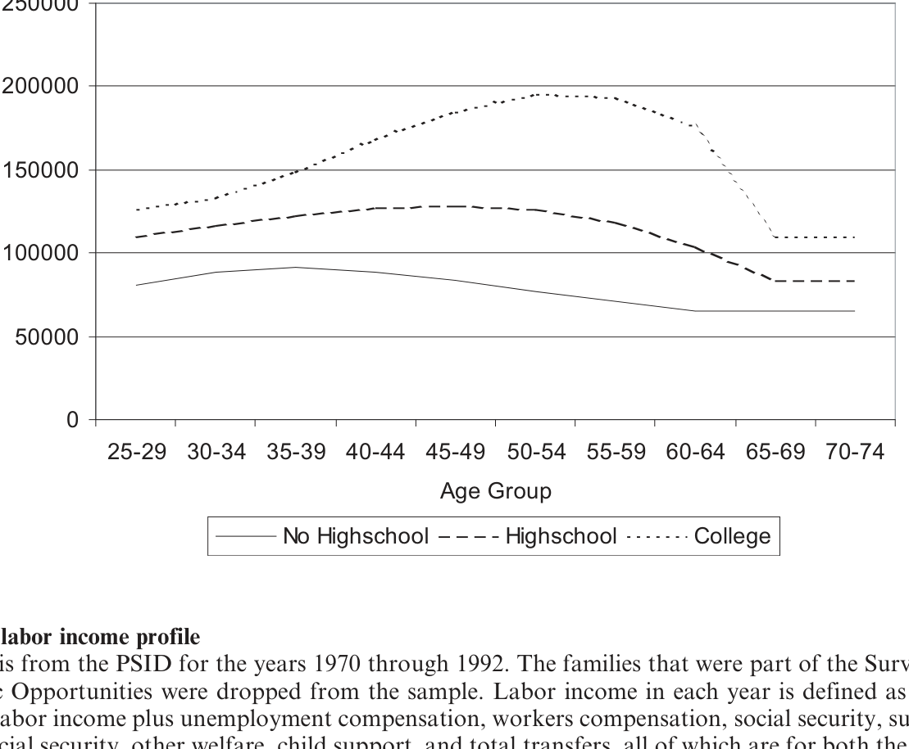
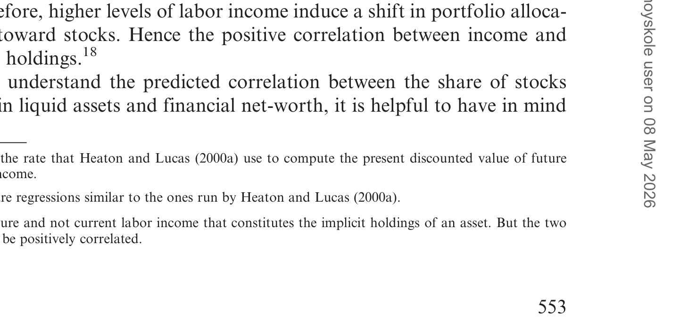
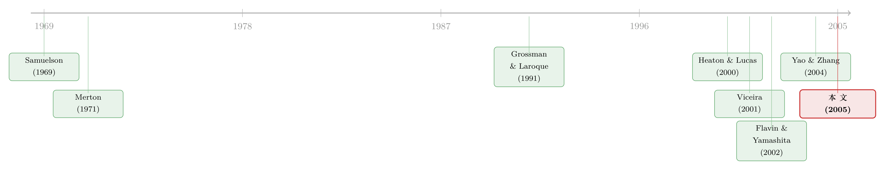

房子，是资产、是消费，还是一块挡在股市门口的石头？
本文读的是 Cocco (2005, Review of Financial Studies)：他用一个带房子的生命周期模型证明，住房之所以能解释「为什么年轻人、穷人几乎不碰股票」「为什么房价风险会挤出股票」「为什么借得多的人反而股票也买得多」这三件看似不相干的事，是因为房子同时扮演了三种角色——一项要先掏首付的资产、一种直接进效用的消费品、以及一团甩不掉的背景风险。一旦把这三重身份写进同一台模型，三个谜题一起解开。
1 一个家庭最大的一笔「投资」，却被组合理论集体忽略
先问一个最朴素的问题：对绝大多数普通家庭来说，这辈子买过的最贵的东西是什么？
不是股票，不是基金，是房子。对许多投资者而言，自住房 (owner-occupied housing) 是他们投资组合里最重要的单项资产。可奇怪的是，从 Samuelson (1969)、Merton (1971) 一路写下来的那套优美的组合选择理论，绝大多数时候是不提房子的——投资者面对的是一笔抽象的「财富」，在无风险资产和股票之间分配，干净、可解、也漂亮。
但只要你肯往真实数据里看一眼，就会撞见一堆这套理论解释不了的事实：
- 大量家庭——尤其是年轻人和穷人——根本不持有任何股票；
- 持有房子的人，似乎在股票上更保守；
- 而 Heaton and Lucas (2000a) 在数据里发现了一件更别扭的事：「更高的按揭，伴随着更高的股票持有」——他们甚至半开玩笑地说，看上去有些股票是「借着按揭间接买来的」。
最后这条尤其反直觉。一个借了一屁股房贷、在住宅地产上加满杠杆的家庭，按常理应该更怕风险、更该躲开股市才对，怎么反而股票买得更多？
注意 Heaton and Lucas 自己强调过：这是相关性，不是因果。本文要做的，恰恰是写一个模型，让这条相关性自然地长出来。
这就是 Cocco (2005) 要回答的核心问题：当你把房子认真地放进投资者的预算约束里，它会怎样重塑整个组合？ 房价风险和住房投资的不流动性，会不会逼着投资者削减对股票的敞口？
2 关键的一步：让房子同时是「三样东西」
很多人写「住房 + 组合」，会把房子简单当成一项不流动的资产。本文真正的发力点，在于它坚持让房子同时扮演三个角色，而这三个角色彼此拉扯，才是全部故事的来源。
第一，房子是消费品。 投资者的效用不只来自一般消费 \(C\)，也来自住房 \(H\)。这一点写进偏好函数里，就是一个嵌套在 CRRA 外壳里的 Cobb-Douglas 复合品：
$$ U = E_1 \sum_{t=1}^{T} \beta^{t-1}\,\frac{\big(C_t^{1-\theta} H_t^{\theta}\big)^{1-\gamma}}{1-\gamma} + \beta^{T}\,\frac{W_{T+1}^{1-\gamma}}{1-\gamma} $$
这里 \(\beta\) 是时间贴现因子，\(\gamma\) 是相对风险厌恶系数，\(\theta\) 衡量住房相对一般消费的偏好权重。只要 \(\theta>0\)，房子就不再只是一项可有可无的资产——你必须住，房子是「要消费的」。
第二，房子是一项带杠杆的资产，但它「最小起订」、还很难脱手。 本文给房子加了两个真实世界的摩擦：一是不可分性，存在一个最小房屋规模 \(\bar H_{min}\)，你不能只买「半平米」股票那样只买一点点房子——
$$H_t \ge \bar H_{min}, \quad \forall t$$
二是不流动，卖房要付一笔等于房价比例 \(\lambda\) 的交易成本，每期还要付比例 \(\delta\) 的维护费。此外，家庭每期有概率 \(p\) 被迫搬家（工作变动、家庭冲击），这是一次外生的、必须卖掉再买的「非自愿迁移 (involuntary move)」。
第三，房子是一团背景风险。 房价不是确定的。更要命的是，一个地区的房价往往和同一地区的劳动收入冲击绑在一起。本文把这层相关性显式写进模型：令 \(p'_t\) 为去趋势后的对数房价，则
$$\eta_t = k_h\,\tilde p'_t \qquad (6)$$ $$v_{it} = k_v\,\tilde p'_t + z_{it} \qquad (7)$$
其中 \(\eta_t\) 是总量 (aggregate) 劳动收入冲击，\(v_{it}\) 是个体的暂时性收入冲击。换句话说，房价一跌，往往你的工资也在跌——房子这项资产，恰恰在你最需要钱的时候掉价。
把这三重身份摆在一起，张力就出来了：你必须买房（消费品），买房必须先掏一大笔（不可分 + 首付），而这笔钱一旦砸进去就很难拿回来且会乱晃（不流动 + 背景风险）。年轻人和穷人本来财富就少，房子这块石头一压，留给股票的「财务弹药」自然所剩无几。
3 模型设定：把一生写成一个贝尔曼方程
把上面三件事翻译成数学，就是一个典型的生命周期动态规划。投资者活 \(T\) 期（每期对应现实中 5 年，25 岁出生、65 岁退休、75 岁去世），前 \(K\) 期工作。
劳动收入是不可交易的人力资本派发的「红利」。对数收入由一个确定性的年龄剖面加两个随机成分构成：
$$ \tilde y_{it} = \begin{cases} f(t, Z_{it}) + \tilde u_{it}, & t \le K \\[2pt] f(t, Z_{it}), & t > K \end{cases} \qquad (2) $$
冲击 \(\tilde u_{it}\) 拆成一个总量成分和一个暂时性成分 \(\tilde u_{it} = \tilde\eta_t + \tilde v_{it}\)，而总量成分服从一个 AR(1)：
$$\tilde\eta_t = \phi\,\eta_{t-1} + \tilde\epsilon_t \qquad (4)$$
直觉上，工作期的收入 = 一条能刻画「驼峰形」生命周期的确定性曲线 + 一个持续性冲击 + 一个一次性冲击；退休后不确定性基本消解，只剩确定性部分。
金融资产有两种：无风险的国债（T-bills，毛实际收益 \(\bar R_f\)）和股票（毛实际收益 \(\tilde R_t\)，\(\log \tilde R_t = \mu + \tilde i_t\)）。两者都不能卖空。关键摩擦在于：要进入股市，必须一次性支付一笔货币化的固定参与成本 (fixed cost of equity market participation) \(F\)——这是沿用 Basak and Cuoco (1998)、Vissing-Jorgensen (2002) 那条「有限参与」文献的标准做法。
按揭让投资者用房子做抵押借钱，借款上限是房价减去首付比例 \(d\)：
$$D_t \le (1-d)\,P_t H_t \qquad (10)$$
于是每期初的流动财富是「股票市值 + 国债本息 − 按揭欠款」：
$$LW_t = \tilde R_t S_{t-1} + \bar R_f B_{t-1} - \bar R_D D_{t-1} \qquad (11)$$
把这些拼起来，投资者的问题就是一个贝尔曼方程。这是全文的引擎，也是房子「三重身份」交汇的地方：
这里 \(\alpha_t\) 是流动资产中投向股票的比例，\(FC_t\) 是一个 0/1 决策——这一期要不要掏那笔固定成本 \(F\) 进股市。状态变量是 \(\{t, H_{t-1}, X_t, \eta_t, InvMove_t, IFC_t\}\)，其中 \(X_t\) 是「现金在手 (cash-on-hand)」，\(IFC_t\) 标记你是否已经是股市参与者。
留意这个设计的巧妙之处：同一个 \(H_t\)，在 a1 里是「要住的房子」，在 a2 里是「能抵押、会涨跌的资产」。模型不让你把这两件事分开——你想多消费住房，就得多持有住房资产，连带承担它的风险和不流动。这正是 Grossman and Laroque (1991) 当年的核心洞见，本文在它之上加了房价风险与不可交易收入。
模型无法解析求解，Cocco 用标准数值方法（Judd 1998），靠逆向归纳 (backward induction) 从最后一期往前一格一格地解，连续状态用三次样条插值，随机变量用高斯求积（Tauchen and Hussey 1991）离散化。
（想看「数值求解动态组合」这件事本身如何被另一种思路——回归模拟——解决，可参见《把「天书」一样的动态组合，交给一台会做回归的模拟器》。）
4 用 PSID 把模型「校准」到真实世界
模型要可信，参数就不能拍脑袋。本文用 1970–1992 年的 PSID（剔除了 Survey of Economic Opportunities 子样本以得到随机样本）来估计劳动收入与房价过程。
劳动收入采用一个宽口径定义（沿用 Cocco, Gomes and Maenhout 2004）：除了工资，还包括失业救济、工伤补偿、社保、各类福利、子女抚养费和亲友转移支付——这样可以隐含地把家庭对收入风险的各种自我保险也算进去。按受教育程度（无高中、高中、大学）分三组估计年龄剖面，结果就是喂给模拟的那条收入曲线。
如图 1 所示，三组的「五年期劳动收入」都呈典型的驼峰形：早年陡升、中年见顶、临退休回落，且学历越高、曲线越高越陡。

Figure 1: shows the estimated age dummies for these education groups
房价过程这边，几个关键估计值（Table 1）很说明问题：
- 总量收入冲击的 AR(1) 系数 \(\phi = 0.748\)——持续性相当强；
- 总量收入冲击的标准差只有 \(\sigma_\eta = 0.019\)，而去趋势房价的标准差高达 \(\sigma_{p'} = 0.062\)——房价比总量收入波动得凶得多；
- 房价与总量收入冲击的相关系数 \(\rho = 0.553\)，在 2% 水平显著；房价与暂时性收入冲击的相关则恰为 0.000。
最后这一组数字，正是本文机制的实证地基：\(0.553\) 这个不算小的正相关说明，「房价和你的工资同涨同跌」并不是模型里凭空假设出来的便利，而是数据里真实存在的事。房子作为背景风险的「恶意」——在坏年景同时砸你工资和资产——是有据可查的。
校准的其它细节也尽量贴着数据：购房交易频率（PSID 里相邻两年都是房主、且报告搬过家的比例为年化 5.44%，折成 5 年一期约 24.4%）用来定外生搬家概率 \(p\)；最小房屋价值 \(\bar H_{min}\) 设为 2 万美元（参照 1992 年房主自评房价分布的低分位）；历史真实房价年均涨 1.59%，但考虑到其中含房屋质量改善，模拟里保守地用 1%。
5 三个谜题，一次解开
校准完成，把模型跑出来和 PSID 的组合数据对照，本文的三块拼图依次落位。
第一块：为什么年轻人、穷人不参与股市？
逻辑很直白：住房投资先把财富「锁」走一大块，年轻人和穷人本就财务净值低，扣掉首付、扣掉最小房屋规模占用的资金，剩下能投股票的钱就所剩无几。可股市参与的好处大致与你能投进去的钱成比例——能投的钱越少，跨过那道固定成本 \(F\) 的门槛就越不划算。于是，在有房子的世界里，要复现数据中观察到的「低参与率」，只需要一个比无房模型低得多的固定成本就够了。这跟纯粹靠抬高 \(F\) 来解释有限参与的做法很不一样——房子替固定成本分担了大部分解释力。
（关于「参与成本到底要多大才合理」这个问题的另一面，可参见《「不买股票」也能是理性的吗？——给参与成本算一笔最省的账》。）
第二块：房价风险挤出股票，而且越穷越挤。
房子是一团甩不掉的背景风险。当一个投资者已经在住宅地产上扛了一大块波动（\(\sigma_{p'}=0.062\)，还和收入正相关），他对再往股票上叠加风险就更没胃口——这就是房价风险对股票持有的挤出效应 (crowding out)。本文的细致之处在于指出：这个挤出对高、低净值投资者都存在，但在低财务净值那头明显更大。穷人本来缓冲就薄，房子这团背景风险压上来，留给股票的风险预算被挤得更狠。
如表 6 所示，模型生成的「杠杆—房产—股票」之间的相关结构，能和 PSID 数据里的模式对上号。

Table 6: shows the correlations predicted by the model. In the model
第三块——也是最反直觉的一块：为什么借得多的人，股票也买得多？
这正是开头那条 Heaton-Lucas 之谜。本文的解释藏在人力资本的「债性」里。关键在于：人力资本虽然有风险，但它的风险结构更像国债 (T-bills) 而不是股票（这一点呼应 Heaton and Lucas 1997 与 Viceira 2001）。于是，一个人力资本越雄厚的投资者，相当于天然持有了一大笔「类债券」资产。
接下来两件事同时发生：因为房子有消费维度，人力资本越多的人会买更贵的房子、因而借更多的按揭（杠杆上去了）；又因为他手里那笔「类债券」的人力资本压低了组合的整体风险，他会在金融组合里向股票倾斜（股票也上去了）。一个原因，两个结果——杠杆和股票于是正相关。注意，这里没有任何「按揭直接拿去买股票」的因果，纯粹是横截面上的内生共生。模型让这条相关性自己长了出来，而非硬塞进去。
这三块拼图共用同一套机制：房子的三重身份。把任何一重抽掉——比如让房子可分、或让房价无风险、或让房子不进效用——某一块拼图就会塌掉。这正是本文「一个核心讲到底」的力量所在。
6 文献脉络：组合理论是怎么一步步「把房子请进门」的
把这条线索拉直看，是一部「组合选择理论不断向真实世界投降」的历史。
起点是 Samuelson (1969) 和 Merton (1971) 的经典动态组合选择——优美，但没有房子、没有不可交易收入。第一次松动来自 Grossman and Laroque (1991)：他们让一个无限期投资者从单一的不流动耐用消费品里获得效用，第一次把「不流动 + 耐用 + 消费」写进资产配置；Cuoco and Liu (2000) 随后把它换成可分的耐用品。
第二条支流是不可交易的人力资本。Heaton and Lucas (1997, 2000a) 与 Viceira (2001) 反复强调：劳动收入这笔「类债券」的背景风险，会系统性地改变金融组合的形状——这正是本文解释「杠杆—股票正相关」时借来的砖。
第三条支流专攻住房本身。Flavin and Yamashita (2002) 提出「住房约束 (housing constraint)」，用均值-方差分析刻画在给定房产/净值比下的最优组合；Faig and Shum (2002) 则把它一般化为「个人不流动项目」。

离本文最近的是 Yao and Zhang (2004)：他们也研究住房如何影响股债配置，发现「租 vs. 买」会带来截然不同的组合——买房时人们用房屋净值替代风险股票，但在流动金融组合内部反而提高了股票比例。本文与之的分工很清楚：Cocco 不碰「租还是买」的决策，但他独有那笔固定参与成本，并专门研究住房投资如何改变人们支付这笔成本的意愿——这恰恰是解释「有限参与」的命门。此外，本文与作者自己的 Campbell and Cocco (2003)（按揭合约选择）、Cocco, Gomes and Maenhout (2004)（生命周期消费-组合）构成一组互补的工作。
（顺着「生命周期 + 组合」这条线，还可以看《年轻人为什么不敢买股票？——把「习惯」请进生命周期的投资账本》，以及把住房决策拆得更细的《半套房子：当「租还是买」不再是单选题》。）
7 评论与延伸（Q&A + 研究方向）
(a) 几个可能的疑问
Q：把房价和收入的相关性「假设为 1」，是不是太偷懒了？
这是为了省一个状态变量的技术取舍。本文把房价的周期波动与总量收入冲击假设为完全正相关（式 6），目的是避免引入额外的状态维度、让数值求解可行。但它并没有把这个假设藏起来：在校准里，PSID 估出的 \(\rho=0.553\)（显著）恰恰被用来检验这个假设有多离谱。0.553 不是 1，但也确实是个不小的正数，方向对、量级也不算夸张——所以这是一个「为可解性付的、但被数据约束着的」代价。
Q：固定参与成本 \(F\) 会不会只是个万能拟合参数，想要多少有限参与就调多少？
本文的贡献恰恰是削弱了对 \(F\) 的依赖。在纯组合模型里，要解释那么多人不持股，你得把 \(F\) 调得很大才行；一旦把房子放进来，住房本身就吃掉了大部分「为什么没钱进股市」的解释，于是只需一个低得多的 \(F\) 就能复现观测到的参与率。换句话说，房子让「有限参与」这件事不再那么依赖一个可疑的大固定成本。
Q：人力资本「像债券」这件事，是结论还是假设？
是设定带来的性质，不是硬塞的结论。收入过程（式 2–4）里，退休后收入几乎确定、工作期冲击的波动也远小于股票，所以这笔不可交易资产的风险结构天然偏「债性」。本文沿用了 Heaton and Lucas (1997)、Viceira (2001) 的这一判断。当然，如果某些人群的收入与股市高度相关（创业者、金融从业者），这个「债性」就会减弱——这也是后续可做的异质性文章。
Q：模型说杠杆和股票正相关，可这是因果吗？
不是，而且本文很诚实地不声称因果。它复现的是 Heaton and Lucas (2000a) 在数据里看到的横截面相关性：人力资本多 → 买更贵的房、借更多 → 同时向股票倾斜。三者由同一个潜在变量（人力资本）驱动，没有「按揭的钱直接流进股票」这条因果管道。把相关讲成机制、而非讲成因果，是这篇模型文的分寸。
Q：每期 5 年、一生只有 10 期，这么粗的时间网格，结论靠得住吗？
这是为压低状态空间维度做的计算妥协（每期对应 5 年）。代价是模型抓不住高频的再平衡和短期流动性管理，对「临退休微调」这类细节会失真。但本文关心的是生命周期尺度上的财富构成与参与/挤出，这个尺度上 5 年的粒度是可以接受的；真正的风险在于，它可能低估了那些发生在年内的住房与组合互动。
Q：忽略租房市场，会不会高估了住房对组合的「绑架」？
会有这个担心。本文跟随 Grossman and Laroque (1991) 假设市场摩擦（税收、交易成本、道德风险）使「买」严格优于「租」，从而把住房的消费维度和投资维度焊死在一起。一旦允许租房，投资者就能把「住」和「投」拆开，住房对组合的挤出会被削弱。Yao and Zhang (2004) 与 Hu (2002) 正是从这个口子切进去的——所以本文的挤出效应，应理解为「不能拆分」情形下的上界式刻画。
(b) 几个可能的研究问题与提案
1. 把「房子挤出股票」搬到公司债 / 信用市场上去。
【经济故事】本文讲的是房子作为背景风险挤出股票。但对中高净值家庭，公司债是一类介于国债和股票之间的资产。房价风险（以及它与收入的正相关）会怎样重塑家庭对信用风险的胃口？一个自然猜想：房价风险会先挤掉股票，再挤掉高收益债，最后才动投资级债——挤出存在一个「信用等级梯度」。 【可行性】中。需要带资产明细的家庭组合数据（如 SCF、欧洲 HFCS）能区分股票/公司债持有；识别上可借助地区房价波动的横截面差异。难点是家庭层面直接持有公司债的样本偏薄，可能要靠债券基金持有来代理。
2. 外资持有人版本的「住房挤出」。
【经济故事】本文的挤出机制依赖「房价与本地收入正相关」这层背景风险。对跨境投资者而言，他们在母国扛着房产风险，却在他国买股票——背景风险与目标资产的相关性结构完全不同。这能否部分解释「股权本土偏好 (home bias)」之外的某些跨境配置模式？外资是否因为「房子在别处」而对东道国股票/债券的需求更有弹性？ 【可行性】中偏低。需要能同时观测投资者母国房产敞口与跨境证券持有的数据，现实中很难匹配到家庭层面；或可退而在国别加总层面，用各国房价波动解释其对外证券资产配置。识别偏弱，更适合做描述性 + 校准。
3. 利率「锁定」如何改写住房-组合的联动。
【经济故事】本文的房子是可随时无成本调整按揭、且会内生交易的。但现实中固定利率按揭会产生「锁定效应」：利率上行时人们不愿卖房搬家（参见《被自己 3% 的房贷「锁」在原地》）。当住房变得更不流动，本文的挤出效应应该被放大——尤其对低净值家庭。 【可行性】高。美国按揭微观数据（如 HMDA + 信用局面板）质量好，2022 年以来的加息提供了干净的时间变异，可用 DiD 比较「深度价内 (in-the-money) 锁定」与否的家庭在风险资产持有上的变化。识别相对扎实。
4. 房价-收入相关性的横截面，作为挤出强度的「实验」。
【经济故事】本文用一个全国平均的 \(\rho=0.553\)。但这个相关性在不同城市差异巨大：在产业单一的城市，房价和收入几乎同生共死；在产业多元的城市则相对脱钩。模型预测，相关性越高的地方，住房对股票的挤出越强。这是一个可直接拿到数据里检验的比较静态。 【可行性】高。用地区面板估计各都会区的房价-收入相关性，再与该地区家庭风险资产参与率/份额回归，控制收入、财富、年龄。挑战是房价-收入相关本身可能与当地金融发达程度内生，需要工具或边界设计来净化。
5. 把「背景风险挤出」从家庭推到企业。
【经济故事】本文的核心其实是一句一般性命题：一团甩不掉、且与现金流正相关的背景风险，会压低你对额外风险资产的需求。企业层面是否也成立？比如重资产、地产敞口大的公司，是否在金融投资上更保守、更偏好持有安全资产？（这与《把风险揣进兜里》的视角恰好互补。） 【可行性】中。Compustat 能测企业的有形资产/地产敞口与金融资产持有，但「背景风险」的度量和反向因果是硬骨头，需要找一个外生冲击（如地方房价崩盘）来识别。
参考文献
- Basak, S., and D. Cuoco (1998). An Equilibrium Model with Restricted Stock Market Participation. The Review of Financial Studies 11(2), 309–341.
- Campbell, J. Y., and J. F. Cocco (2003). Household Risk Management and Optimal Mortgage Choice. Quarterly Journal of Economics 118(4), 1149–1194.
- Cocco, J. F. (2005). Portfolio Choice in the Presence of Housing. The Review of Financial Studies 18(2), 535–567.
- Cuoco, D., and H. Liu (2000). Optimal Consumption of a Divisible Durable Good. Journal of Economic Dynamics and Control 24(4), 561–613.
- Faig, M., and P. Shum (2002). Portfolio Choice in the Presence of Personal Illiquid Projects. Journal of Finance 57(1), 303–328.
- Flavin, M., and T. Yamashita (2002). Owner-Occupied Housing and the Composition of the Household Portfolio over the Life Cycle. American Economic Review 92(1), 345–362.
- Grossman, S. J., and G. Laroque (1991). Asset Pricing and Optimal Portfolio Choice in the Presence of Illiquid Durable Consumption Goods. Econometrica 58(1), 25–51.
- Heaton, J., and D. J. Lucas (1997). Market Frictions, Saving Behavior and Portfolio Choice. Macroeconomic Dynamics 1(1), 76–101.
- Heaton, J., and D. J. Lucas (2000a). Portfolio Choice and Asset Prices: The Importance of Entrepreneurial Risk. Journal of Finance 55(3), 1163–1198.
- Merton, R. (1971). Optimum Consumption and Portfolio Rules in a Continuous-Time Model. Journal of Economic Theory 3(4), 373–413.
- Samuelson, P. A. (1969). Lifetime Portfolio Selection by Dynamic Stochastic Programming. Review of Economics and Statistics 51(3), 239–246.
- Tauchen, G., and R. Hussey (1991). Quadrature-Based Methods for Obtaining Approximate Solutions to Nonlinear Asset Pricing Models. Econometrica 59(2), 371–396.
- Viceira, L. M. (2001). Optimal Portfolio Choice for Long-Horizon Investors with Nontradable Labor Income. Journal of Finance 56(2), 433–470.
- Vissing-Jorgensen, A. (2002). Towards an Explanation of Household Portfolio Choice Heterogeneity: Nonfinancial Income and Participation Cost Structures. Working paper, Northwestern University.
- Yao, R., and H. Zhang (2004). Optimal Consumption and Portfolio Choices with Risky Housing and Borrowing Constraints. Working paper, University of North Carolina.